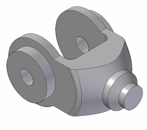

This tutorial demonstrates a typical workflow for modeling a part with Solid Edge. You will construct protrusions, revolved cutouts, holes, and rounded features. You will also use the Grid tool to help you draw a profile.
This is an intermediate tutorial. You might find it easier to follow if you first complete the Introduction to Part Modeling tutorial.
Estimated time to complete: 30 minutes
